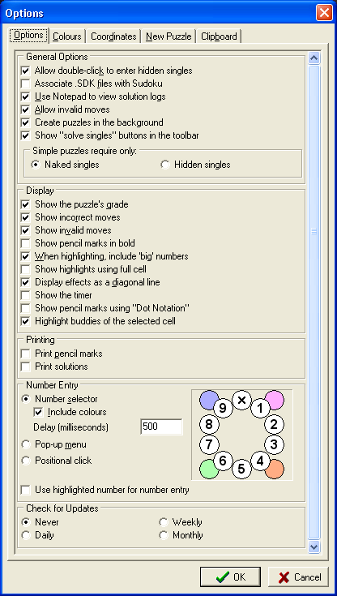

Note: you will need to scroll the dialog to see some of these options. The above image has been manipulated to make all the options visible.
Allow double-click to enter hidden singles Determines whether a double-click can be used to enter hidden singles.
Associate .SDK files with Sudoku When .SDK files are associated with Sudoku, you can simply double-click one to open it.
Use Notepad to view solution logs When selected, the solution logs will be opened in Windows Notepad instead of the built-in log viewer.
Allow invalid moves Determines whether you are allowed or prevented from entering invalid moves. Invalid moves are moves that break the rule of Sudoku, as opposed to incorrect moves, which are moves that will not lead to the solution.
Create puzzles in the background Determines whether Sudoku uses the computers idle time to create a library of pre-generated puzzles. Pre-generating puzzles means that a new puzzle can be presented almost immediately upon request, but on some older systems, it can cause the computer to slow down unacceptably. If this is the case, you may want to disable background generation while you are actively using the computer, and re-enable it when you are not using it.
Show "solve singles" buttons in the toolbar Determines whether the "Complete Naked Singles" and "Complete Hidden Singles" buttons are shown in the toolbar. Some people prefer not to be aware of when the puzzle contains naked or hidden singles, and so prefer not to see these buttons become enabled.
Simple Puzzles Require Only This option allows you specify whether the easiest puzzles should require only naked or hidden singles. Depending on how you like to solve sudoku puzzles, you may look for naked or hidden singles before the other. Naked singles are easier to spot if you use a computer program to keep the pencil marks accurate, but if you prefer to solve entirely by hand, you'll probably look for hidden singles before naked singles.
Show the puzzle's grade Causes the puzzles grade to be shown in the status bar.
Show incorrect moves Causes incorrect big numbers to be highlighted. This option is also available from the toolbar on the main form.
Show invalid moves Determines whether invalid moves and/or cells that cannot be filled are shown highlighted.
Show pencil marks in bold Determines whether pencil marks are shown in a bold or normal font.
When highlighting, include 'big' numbers Controls whether big numbers are highlighted along with the pencil marks.
Display effects as a diagonal line The effects can either be shown with a diagonal line, or a solid colour.
Show the Timer Determines whether the solution timer is visible.
Show pencil marks using "Dot Notation" Causes pencil marks to be shown with positioned dots rather than numbers.
Highlight buddies of the selected cell Causes the "buddies" of the selected cell to be highlighted.
Print pencil marks When printing puzzles from the library, whether to include pencil marks in the printed output.
Print solutions When printing several puzzles from file or from the library, this option controls whether the solutions are also printed.
Note: when printing the currently displayed puzzle, pencil marks, highlights and effects are printed as they are displayed on the screen. In other words, what-you-see-is-what-you-get (WYSIWYG.)
Allows you to choose between the custom number selector, a pop-up menu or "positional click". When the number selector is enabled, you can also choose whether to enable the colour selector. See the number selector page for details on the functions it provides.
The Delay (milliseconds) is the interval between clicking the display and the appearance of the number selector. Increase this number if you have problems double-clicking to enter naked or hidden singles, decrease it if the number selector is too slow to appear. The default value is the system configured double-click time. This value must be between 0 and 1000 milliseconds.
Positional click is an advanced option. If you imagine the cell divided into a 3x3 grid of nine sub-cells numbered 1 to 9, clicking one of those sub-cells enters the corresponding number. Clicking it again, removes that number. Left clicking in a cell enters a solution number according to the position of the click within the cell, and right-clicking toggles the pencil-mark according to the position of the click within the cell.
Note: If you want to double-click the cell, without positional click entering a number, hold down the Alt, or Shift key while you double-click. You can also use positional-clicking to colour the cell. Hold down the Control key while clicking to toggle the colour corresponding to the number of the sub-cell clicked. Clicking in positions 7, 8 or 9 clears the cell's colour.
If the option to "Use highlighted number for number entry" is checked, double-clicking a cell will enter the highlighted number if there is one and it is allowed by the pencil-marks, otherwise it will enter naked or hidden singles as normal. Similarly, right-clicking will toggle the pencil-mark for the highlighted number instead of showing the number selector or pop-up menu.
Allows you to configure the interval between checks for a newer version, or to disable the check entirely.